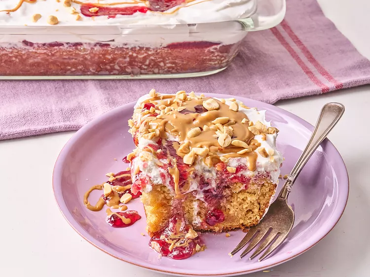

Home
Peanut Butter Cake

We love a good peanut butter and jelly sandwich here at Allrecipes.
From cupcakes to chicken wings, we’ve found a way to PB&J-ify just about
everything—or so we thought. When senior culinary producer Nicole McLaughlin
saw content creator @holmescooking making a peanut butter and jelly poke cake
on TikTok, she said exactly what we were all thinking: “How have we never thought
of this one before?”
Ingredients
- 1 (15.25 ounce) box vanilla cake mix
- 1 1/4 cup peanut butter, divided
- 1/2 cup butter, melted
- 4 large eggs
- 1 1/4 cups milk
- 1 1/4 cup grape jelly, divided
- 8 ounces whipped topping
- 1/4 cup chopped peanuts
Steps
- Preheat the oven to 350 degrees F (180 degrees C). Grease a 9x13-inch baking pan.
- Add cake mix, 1 cup peanut butter, butter, eggs. and milk to a bowl, and stir until well combined. Batter may be
slightly lumpy. Pour batter into the prepared pan.
- Bake in the preheated oven until a toothpick inserted in the center comes out clean, about 35 minutes. Let stand
for 10 minutes.
- Use the handle of a wooden spoon to poke holes into the cake. Melt 1 cup jelly in the microwave until pourable,
1 to 2 minutes, stirring every 30 seconds. Spread jelly over warm cake with a spatula and work jelly down into the
holes. Let cake cool completely.
- Spread whipped topping over cake; refrigerate until ready to serve.
- Microwave remaining 1/4 cup peanut butter and 1/4 cup jelly until just pourable; drizzle cake with peanut butter
and jelly and sprinkle with peanuts to serve.